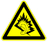

Respectez-les. Sinon, cela peut entraîner d’éventuels risques pour la santé ou un dysfonctionnement de l’appareil. Si vous doutez de son bon fonctionnement, faites-le vérifier par un partenaire de services agréé avant de le charger ou de l’utiliser.
Respectez-les. Sinon, cela peut entraîner d’éventuels risques pour la santé ou un dysfonctionnement de l’appareil. Si vous doutez de son bon fonctionnement, faites-le vérifier par un partenaire de services agréé avant de le charger ou de l’utiliser.
Respectez-les. Sinon, cela peut entraîner d’éventuels risques pour la santé ou un dysfonctionnement de l’appareil. Si vous doutez de son bon fonctionnement, faites-le vérifier par un partenaire de services agréé avant de le charger ou de l’utiliser.
 Pour des performances optimales, le produit ne doit pas être utilisé à des températures inférieures à -10° C(+14° F) ou supérieures à +45° C(+113° F). N’exposez pas la batterie à des températures supérieures à +60° C(+140° F).
Pour des performances optimales, le produit ne doit pas être utilisé à des températures inférieures à -10° C(+14° F) ou supérieures à +45° C(+113° F). N’exposez pas la batterie à des températures supérieures à +60° C(+140° F). Ne tenez pas l’appareil à proximité d’une flamme ou d’une cigarette allumée.
Ne tenez pas l’appareil à proximité d’une flamme ou d’une cigarette allumée. Ne peignez pas ou n’essayez pas de démonter ou de modifier l’appareil. Toute intervention doit être obligatoirement confiée à un personnel agréé Sony.
Ne peignez pas ou n’essayez pas de démonter ou de modifier l’appareil. Toute intervention doit être obligatoirement confiée à un personnel agréé Sony. Enfants
EnfantsAvertissement ! Conservez hors de portée des enfants. Ne laissez pas les enfants jouer avec des appareils mobiles ou avec leurs accessoires. Ils pourraient se blesser ou blesser des tiers. Ces appareils peuvent contenir des petites pièces susceptibles de se détacher et de présenter des risques d’étouffement.
Ne branchez le chargeur que sur les sources d’alimentation indiquées sur le produit. Ne l’utilisez pas à l’extérieur ou dans des endroits humides. Ne modifiez pas le cordon et évitez de l’endommager ou de tirer dessus. Débranchez le chargeur avant de le nettoyer. Ne modifiez jamais la fiche. Si elle ne s’insère pas dans la prise, faites installer une prise adéquate par un électricien. Lorsque le chargeur est branché, il consomme une petite quantité de courant. Pour éviter cette faible perte d’énergie, débranchez-le une fois l’appareil complètement chargé. L’utilisation de chargeurs d’une marque autre que Sony peut augmenter les risques liés à la sécurité.
La capacité des batteries neuves ou inutilisées peut diminuer très rapidement. Chargez complètement la batterie avant sa première utilisation. Utilisez-la uniquement pour l’usage recommandé. Chargez la batterie à une température ambiante comprise entre +5°C(+41°F) et +45°C(+113°F). Ne portez pas la batterie à la bouche. Ne laissez pas les contacts de la batterie toucher un autre objet métallique. Mettez l’appareil hors tension avant de retirer la batterie. Les performances dépendent de la température, de l’intensité du signal, des habitudes d’utilisation, des fonctionnalités sélectionnées, ainsi que des transmissions vocales et de données. Seuls les partenaires de services Sony sont habilités à retirer ou à remplacer des batteries intégrées. L’utilisation de batteries d’une marque autre que Sony peut augmenter les risques liés à la sécurité. Ne remplacez la batterie que par une autre batterie Sony certifiée compatible avec le produit conformément à la norme IEEE-1725. L’utilisation d’une batterie non conforme peut présenter un risque d’incendie, d’explosion, de fuite ou d’autres dangers.
Les appareils mobiles équipés d’émetteurs radio peuvent gêner le fonctionnement de certains équipements médicaux implantés. Réduisez le risque d’interférences en maintenant une distance minimale de 15 cm(6”) entre le produit Sony et l’équipement médical. Utilisez l’appareil Sony à l’oreille droite, lorsque c’est possible. Ne transportez pas l’appareil dans la poche d’une chemise. Éteignez l’appareil si vous soupçonnez la présence d'interférences. Pour une utilisation à proximité d’appareils médicaux personnels, interrogez un médecin et le fabricant de ces appareils.
Certains constructeurs automobiles interdisent l’utilisation d’appareils mobiles dans leurs véhicules, sauf avec un kit mains libres et une antenne extérieure. Vérifiez auprès de votre concessionnaire que l’appareil mobile ou l’oreillette Bluetooth n’affecteront pas les systèmes électroniques de votre véhicule. À tout moment, toute votre attention doit se porter sur la conduite et vous êtes tenu de respecter la législation ainsi que les réglementations locales limitant l’utilisation d’appareils sans fil au volant.
Certains produits proposent des fonctions de localisation/GPS. La fonctionnalité déterminant l’emplacement est fournie « en l'état » et « avec toutes ses imperfections ». Sony n’asure pas et ne garantit pas la précision de ces informations de localisation.
L’utilisation par l’appareil d’informations basées sur la localisation risque de ne pas être ininterrompue ou exempte d’erreur et peut en outre dépendre de la disponibilité du service réseau. Veuillez noter que cette fonctionnalité peut être limitée ou interdite dans des environnements déterminés comme à l’intérieur de bâtiments ou dans des zones adjacentes à ceux-ci.
Attention : N'utilisez pas la fonction GPS d'une manière susceptible de vous distraire au volant.
Ces appels ne peuvent être garantis dans toutes les conditions. Pour passer des communications essentielles, ne vous en remettez jamais aux seuls appareils mobiles Sony. Il peut en effet s’avérer impossible de passer un appel en certains endroits, sur certains réseaux cellulaires ou pendant l’utilisation de certains services réseau ou de certaines fonctions téléphoniques. Notez également que certains appareils Sony ne permettent pas de passer ou recevoir des appels vocaux, et notamment les appels d’urgence.
L’utilisation d’antennes qui ne sont pas commercialisées par Sony risque d’endommager l’appareil mobile, de réduire ses performances et de générer des niveaux de taux d’absorption sélective (SAR) supérieurs aux limites prescrites. Ne couvrez pas l’antenne avec la main, car cela risque d’affecter la qualité de l’appel et le niveau de puissance, ainsi que de réduire les temps de conversation et de veille.
Lorsque l’appareil mobile ou la fonctionnalité mains libres Bluetooth sont activés, l’appareil émet des signaux fréquence radio de faible niveau. Des consignes de sécurité internationales ont été développées à partir d’évaluations complètes et régulières tirées d’études scientifiques. Ces consignes fixent des seuils d’exposition aux ondes radio autorisées. Elles prévoient une marge de sécurité destinée à assurer la sécurité de toutes les personnes, ainsi qu’à prévoir tout écart de mesure.
Le taux d’absorption sélective (Specific Absorption Rate ou SAR) permet de mesurer l’énergie des fréquences radio absorbée par le corps humain en cas d’utilisation d’un appareil mobile. La valeur du taux d’absorption sélective est déterminée au niveau de puissance certifié le plus élevé, mesuré dans des conditions de laboratoire, mais comme l’appareil est conçu pour consommer le moins d'énergie possible nécessaire pour atteindre le réseau choisi, le niveau SAR effectif peut être largement inférieur à cette valeur. Il n’existe aucune preuve qu’une différence de taux d’absorption sélective puisse entraîner une différence en matière de sécurité.
Les produits dotés d’émetteurs radio vendus aux États-Unis doivent être certifiés par la FCC (Federal Communications Commission). Lorsque c’est nécessaire, des tests sont effectués lorsque l’appareil est placé au niveau de l’oreille ou qu’il est porté sur le corps. Si vous le portez sur vous, l’appareil a été testé à une distance de 15 mm au moins du corps, loin de tout objet métallique, ou encore lorsqu’il est utilisé correctement avec un accessoire de transport Sony approprié. Pour une utilisation avec la fonctionnalité de points d'accès, la distance de séparation était de 10 mm.
Pour plus d’informations sur le taux d’absorption sélective (SAR) et l’exposition aux fréquences radio, allez sur http://blogs.sonymobile.com/about-us/sustainability/health-and-safety/sar/.
Bien qu’il soit possible d’activer en mode Avion Bluetooth et la fonctionnalité WLAN (si disponibles sur l’appareil), ils peuvent très bien être interdits à bord des avions ou dans d’autres zones où les émissions radio sont prohibées. Dans ces environnements, demandez toujours l’autorisation avant d’activer Bluetooth ou la fonctionnalité WLAN, même en mode Avion.
Un logiciel malveillant (malware en anglais, abréviation de malicious software) est un logiciel susceptible de nuire à l’appareil. Les logiciels malveillants ou applications nuisibles peuvent être des virus, des vers, des logiciels espions ou d’autres programmes indésirables. Même si l’appareil applique des mesures de sécurité pour résister à ces intrus, Sony ne peut garantir ou affirmer que l’appareil sera hermétique à toute intrusion de logiciel malveillant. Vous pouvez cependant réduire le risque d’attaques par des logiciels malveillants en usant de précautions lors du téléchargement de contenu et de l’acceptation d’applications, en veillant à ne pas ouvrir ou répondre aux messages provenant de sources inconnues, en utilisant des services de confiance pour accéder à Internet et en ne téléchargeant sur l’appareil mobile que du contenu provenant de sources connues et fiables.
Utilisez exclusivement des accessoires d’origine de marque Sony, et faites uniquement appel à des partenaires de services certifiés. Sony ne teste pas les accessoires d’autres fabricants. Les accessoires peuvent influencer l’exposition aux hautes fréquences (HF), les performances radio, le volume audio, la sécurité des composants électriques et d’autres domaines. L’utilisation d’accessoires et de pièces d’autres fabricants risque de mettre en péril votre santé et votre sécurité ou de réduire les performances.
Aux États-Unis, les appareils Sony Mobile compatibles peuvent être utilisés avec des terminaux TTY (équipés de l’accessoire requis). Pour plus d’informations, appelez le Sony Special Needs Center au 877 878 1996 (TTY) ou au 877 207 2056 (voix), ou allez sur http://blogs.sonymobile.com/about-us/sustainability/accessibility/overview/.
 Mise au rebut des équipements usagés (matériels électriques et électroniques et batterie)
Mise au rebut des équipements usagés (matériels électriques et électroniques et batterie)La présence de ce symbole sur les produits électroniques ou sur leur emballage signale que le produit électronique (batterie comprise) ne doit pas être traité comme un simple déchet ménager. Il doit être remis à un point de collecte où il sera recyclé en tant qu’équipement électrique et électronique. N’essayez pas de retirer les batteries internes. Les batteries internes retirées que par un technicien qualifié ou dans un centre de traitement des déchets.
En veillant à vous débarrasser correctement de ce produit, vous contribuerez à la protection de l’environnement et de la santé humaine, qui risqueraient d’être endommagés par une mise au rebut inappropriée de ce produit. Le recyclage des matériaux contribue à la préservation des ressources naturelles. Pour des informations plus détaillées sur le recyclage de ce produit, contactez votre municipalité, le service de recyclage des déchets du magasin où vous avez acheté le produit ou appelez un centre de contacts Sony (www.sonymobile.com/recycling).
Si le produit est fourni d'origine avec une carte mémoire amovible, il est généralement compatible avec le combiné acheté, mais il se peut qu'il ne soit pas compatible avec d'autres appareils ou avec les fonctionnalités de leurs cartes mémoire. Vérifiez la compatibilité des autres appareils avant tout achat ou utilisation. Si le produit est équipé d’un lecteur de carte mémoire, vérifiez la compatibilité de la carte mémoire avant tout achat ou utilisation.
Les cartes mémoire sont généralement formatées avant leur sortie d’usine. Pour reformater la carte mémoire, utilisez un appareil compatible. Pour formater la carte mémoire sur un PC, n’utilisez pas la commande habituelle de formatage du système d’exploitation. Pour des explications détaillées, reportez-vous au mode d’emploi de l’appareil ou contactez le Centre Relation Consommateur Sony.
Si votre appareil est équipé d'un emplacement de taille standard pour une carte SIM, l'insertion d'une carte SIM non compatible (par exemple, une carte micro SIM, une carte micro SIM avec un adaptateur non Sony ou une carte SIM standard réduite à la taille d'une carte micro SIM) risque d'endommager définitivement la carte SIM ou l’appareil. Sony n’offre aucune garantie ni ne saurait être tenu pour responsable des dommages causés par l’utilisation de cartes SIM incompatibles ou modifiées.
Si l'appareil nécessite un adaptateur pour pouvoir être inséré dans le combiné ou dans un autre appareil, n’insérez pas la carte directement sans l’adaptateur requis.
Effacez vos données personnelles avant de mettre l’appareil au rebut. Pour supprimer les données, effectuez une réinitialisation générale. La suppression des données depuis la mémoire de l’appareil ne garantit pas qu’il sera impossible de récupérer ces données. Sony ne fournit aucune garantie quant à la récupération d’informations et n’assume aucune responsabilité vis-à-vis d’une divulgation ultérieure d’informations, même en cas d’exécution d’une réinitialisation générale.
La visualisation sur un moniteur 3D d'images 3D prises avec cet appareil peut provoquer un certain inconfort (fatigue oculaire ou générale, nausées). Pour prévenir ces symptômes, nous vous conseillons de faire régulièrement des pauses. C'est à vous de déterminer la durée et la fréquence de ces pauses, dont le besoin varie d'une personne à l'autre. Si vous ressentez un quelconque inconfort, cessez de visualiser les images 3D jusqu’à ce que vous vous sentiez mieux et n'hésitez pas à consulter un médecin si nécessaire. Reportez-vous également au mode d'emploi fourni avec l'appareil ou avec les logiciels connectés à cet appareil ou utilisés avec lui. Rappelez-vous que la vue des enfants est toujours à un stade de développement (particulièrement celle des enfants de moins de six ans). Consultez un pédiatre ou un ophtalmologue avant de laisser votre enfant regarder des images 3D et assurez-vous qu'il observe les précautions énoncées ci-dessous lorsqu'il visualise ce type d'images.
Evitez des niveaux de volume pouvant altérer l’audition.
A pleine puissance, l’écoute prolongée des fonctions musicales de ce produit peut altérer l’ouïe de l’utilisateur.